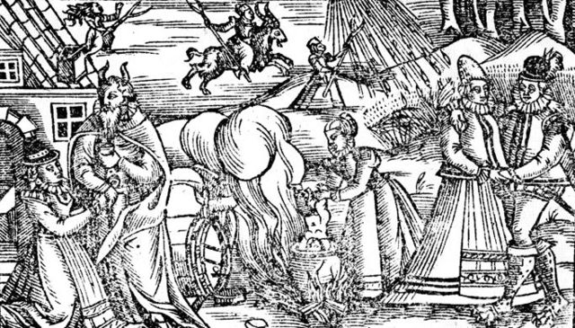

This mini site discusses 4 woodcuts depicting witchcraft from the 16th century to the 18th century.
Witches and Witchcraft
Witches and witchcraft are a hotly debated subject. Did they exist in the literal sense? Probably not, but that's certainly what people believed at the time. Belief in witchcraft or "malevolent magic" can be traced back to the ancient world, but by the 16th century it had transformed into a hardened belief that some individuals used maleficium to inflict harm on others deliberately. This belief ultimately led to witchhunting and witchtrials across Europe and the North American continent that would continue until the 19th century. The woodcuts from the 16th century that depict witches reflect society's deep anxieties about supernatural power, particularly when wielded by women. The recurring imagery of weather manipulation, flying, and causing harm to others shows what communities feared witches could do - disrupt the natural order, damage crops through storms, or inflict disease on neighbors. They helped create a shared visual language for what "witches" looked like and did, turning folk beliefs and theological speculation into seemingly documentary evidence. Once people had these images in mind, it became easier to "recognize" witchcraft in their communities, potentially feeding the witch trial cycles that peaked in the 16th-17th centuries.
Woodcut 1

A lively sabbath scene: witches gather around a cauldron and spinning wheel while figures fly through the sky in the background.
Description: Peter Binsfield's woodcut depicts a multi-figure outdoor scene commonly associated with the witches' sabbath: women working at a cauldron, a spinning wheel, and small demonic figures or riders in the sky. Images like this visualize testimony and folklore about nocturnal gatherings, the making of potions or familiars, and supernatural flight.
Interpretation: At Trier (Germany) between 1587 and 1593, under the direction of the Jesuit demonologist Peter Binsfeld, 368 witches were burned from twenty-two villages. His book Treatise on the Confessions of Evildoers and Witches (1589) became very popular and was widely circulated throughout Europe. He also wrote the influential treatise De confessionibus maleficorum et sagarum (Of the Confessions of Warlocks and Witches - Trier 1589), which was translated into several languages. His prints often appeared in pamphlets and broadsides to sensationalize accounts and reinforce the idea that witchcraft involved communal, nocturnal rites that disrupted everyday life.
Woodcut 2: Witchcraft: a witch and a devil making a nail with which to make a boy lame.
Interior scene showing a horned demonic figure and a woman working at a heated hearth or forge.
Description: This woodcut comes from 1720 and the composition centers on a hearth or forge with a horned, human-like figure (most likely the devil or a demonic helper) and a woman wielding a tool. The forge motif links the witchcraft and demonology to domestic labor with alleged magical practice.
Interpretation: Among other things, this could illustrate the making of magical implements, forging of spells or charms, or the presence of a demonic helper. Women were often accused of summoning demons. Prints like this reinforced the idea that witchcraft had a practical, domestic side—potions, charms, and tools made in secret.
Woodcut 3: Witchcraft: witches and devils dancing in a circle.
A ring of dancers—human and demonic figures hold hands in a ritual circle.
Description: This woodcut is also from 1720 and shows a circular dance or ritual, with women and demonic figures holding hands and dancing in a circular motion. The circular dance was a symbol of a communal ritual activity, often described in period accounts as the witches' sabbath or diabolical festivals.
Interpretation: The ring is a recurring motif in folkloric and trial testimony and visually dramatized the perceived social and ecstatic aspects of witch gatherings. What we see is witches and demons dancing together, wax poppets being baptised by the devil, spirits leaping from the flames, and a feast at the witches’ sabbath. This is an energetic and dynamic portrayal of witchcraft, much more tantalising than grumpy old women.
Description: The central horned, winged figure--likely the Devil--is flanked by women who present small figures or dolls (poppets), while birdlike creatures fly above. This highlights fears about satanic offerings to a diabolic master and the use of dolls or familiars in witchcraft narratives.
Interpretation: This imagery reinforced links between witchcraft, familiars, and negotiations with a powerful supernatural being—an image used to justify suspicion and prosecution.
Historical Notes
The witchcraze and the woodcuts were a parallel event to the explosion of print in the 16th and 17th centuries. A sheet of cheap paper could be printed with a variety of things on it including a proclamation, with a woodcut, and then sent out among the masses--whether you could read or not woodcuts made an impression. Pamphlets ad broadsides were sold for a penny on street corners, pasted on ale house walls, and stuck up on market posts. Cheap print was the medium of the masses, and the crude woodcuts were the visual language of early modern Europe.
Period and style: The coarse linear woodcut technique, schematic figures, and moralizing composition place these images in the early modern printed tradition (broadly 16th–18th century). Without documented provenance, treat them as typical "popular print" imagery from that period.
Purpose: Woodcuts both illustrated and sensationalized narratives about witchcraft. They appeared in trial reports, demonological pamphlets, and broadsheet news-sheets and shaped popular perceptions. Historians use these images as evidence of how witchcraft was imagined in the public sphere but caution against reading them as documentary proof of practice.
Suggested reading: Brian P. Levack, The Witch-Hunt in Early Modern Europe; Lyndal Roper, Witch Craze; Keith Thomas, Religion and the Decline of Magic.
Provenance note: Each of these woodcut images are in the public domain and sourced from Wikimedia Commons.